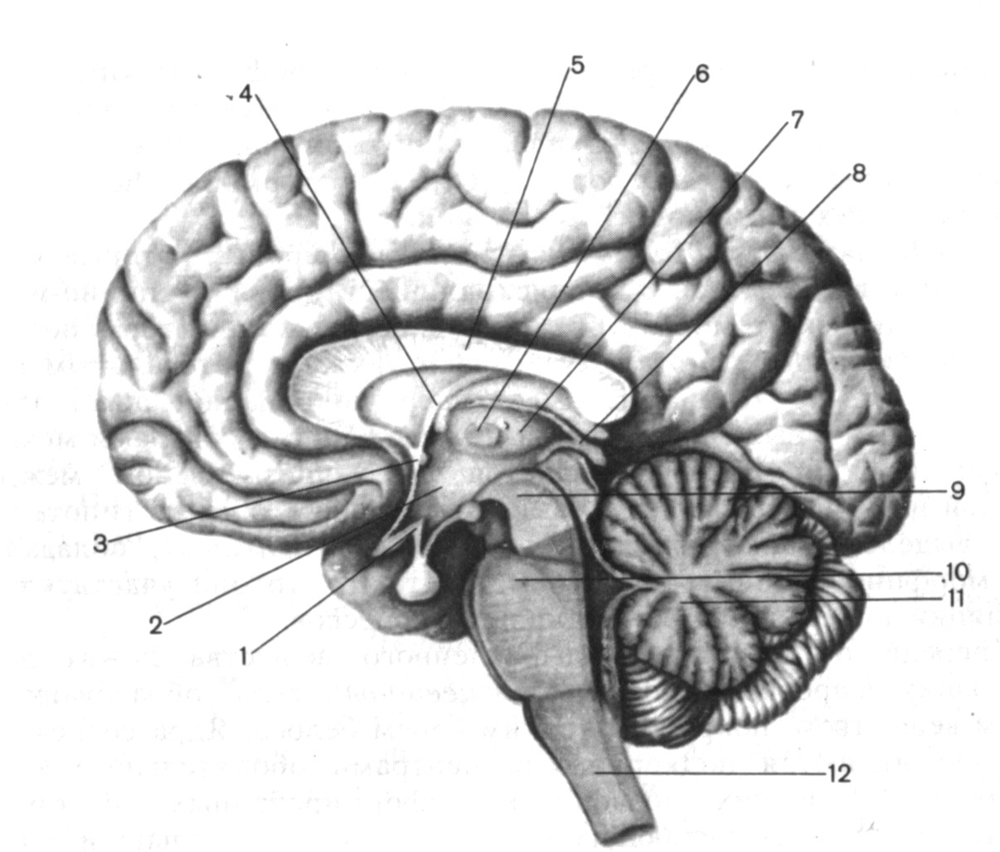
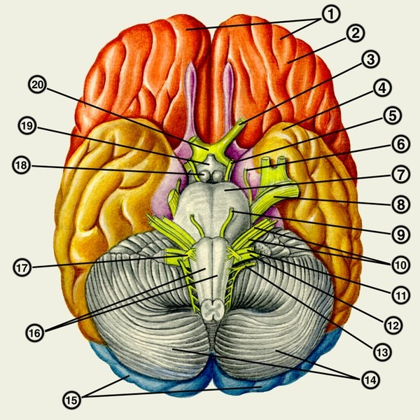
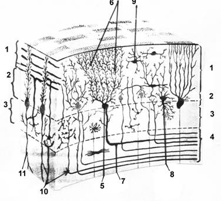
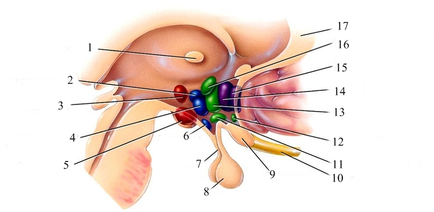
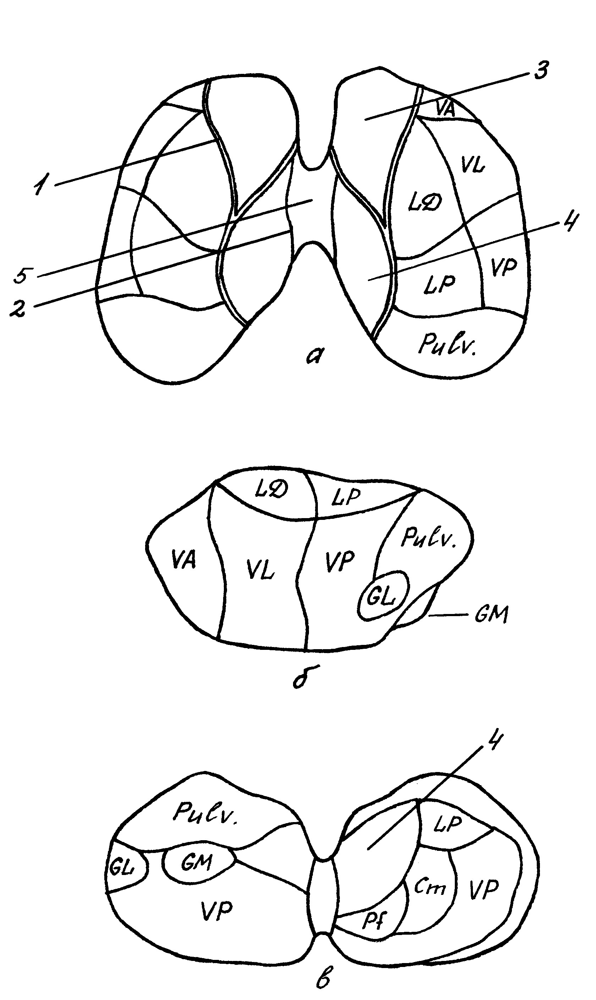
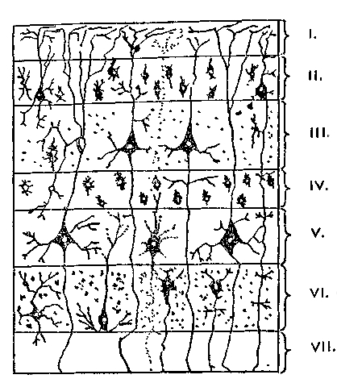
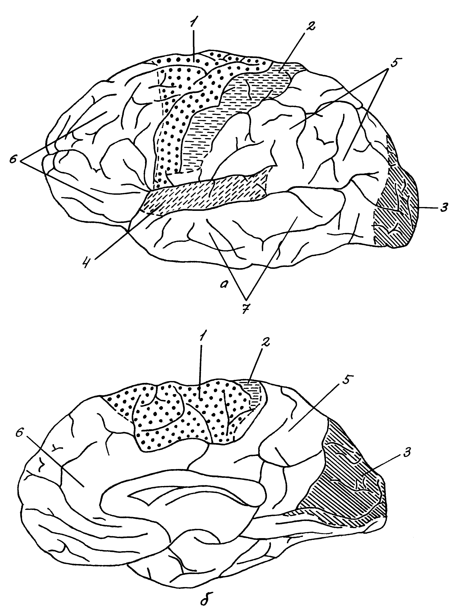
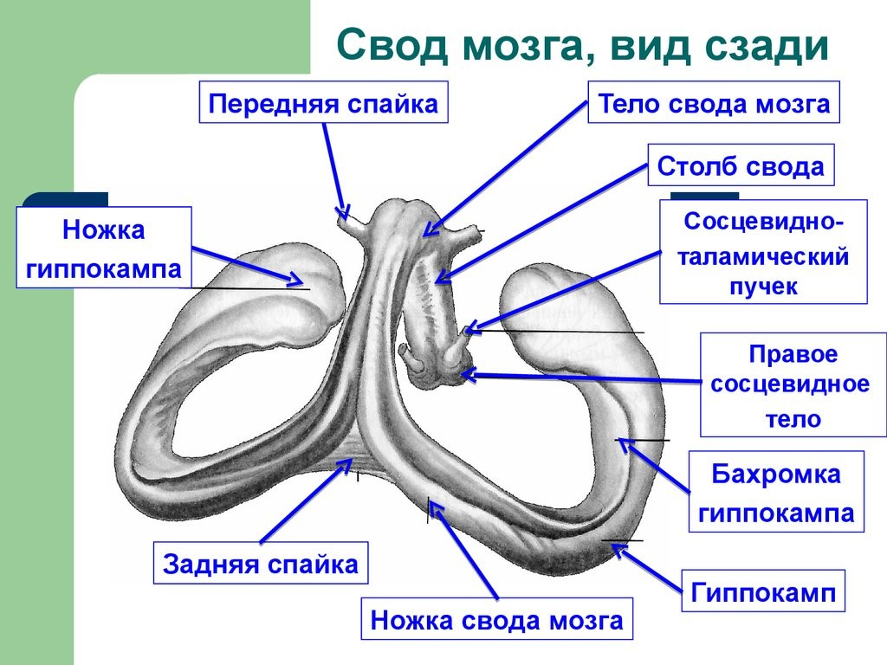
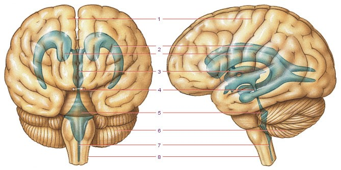

ГОЛОВНОЙ МОЗГ
- 1 Продолговатый мозг
- 2 Мост
- 3 Мозжечок
- 4 Четвертый желудочек
- 5 Среднйи мозг
- 6 Промежуточный мозг
- 7 Третий желудочек
- 8 Конечный мозг
- 8.1 Общая характеристика
- 8.2 Строение коры большого мозга
- 8.3 Локализация функций в коре полушарий большого мозга
- 8.4 Базальные (подкорковые центральные) ядра
- 8.5 Белое вещество мозга
- 8.6 Оболочки головного мозга
- 1. Нижние ножки связывают мозжечок с продолговатым мозгом.
- 2. Средние ножки связывают его с мостом, а через него – с корой больших полушарий.
- 3. Верхние ножки служат для связи с крышей среднего мозга.
- 1. Мозжечково-мозговая цистерна расположена между продолговатым мозгом вентрально и мозжечком дорсально. Сзади она ограничена паутинной оболочкой. Это наиболее крупная из всех цистерн.
- 2. Цистерна латеральной ямки большого мозга находится на нижнебоковой поверхности полушария большого мозга в одноименной ямке, что соответствует передним отделам латеральной борозды полушария большого мозга.
- 3. Цистерна перекреста расположена на основании головного мозга, кпереди от зрительного перекреста.
- 4. Межножковая цистерна определяется в межножковой ямке между ножками мозга, книзу (кпереди) от заднего продырявленного вещества.
Головной мозг (encephalon) располагается в полости мозгового черепа, форма которого определяется формой мозга. Масса мозга у новорожденного около 389 г у мальчиков и 355 г у девочек. При этом у новорожденного более развиты филогенетически более старые отделы мозга. До 5 лет масса мозга быстро увеличивается, в 6-летнем возрасте составляет 85–90 % окончательной, затем до 24–25 лет медленно возрастает, после чего рост заканчивается и составляет около 1500 г (от 1100 до 2000).
видео с канала Medical Lessons
Абсолютная и относительная масса мозга не является надежным критерием для суждения о степени развития организма. Так, масса головного мозга макаки 62 г, гиббона 100 г, шимпанзе и орангутана 400–420 г, гориллы 500 г, кошки 30 г, дельфина 1800 г, кита 7000 г, слона 5000 г и т. д. По относительной массе мозга по сравнению с массой тела многие млекопитающие (ряд низших обезьян, грызунов, птиц и др.) превосходят человека.
Изучение головного мозга человека наносит удар по расистским «теориям». Так, абсолютная масса мозга не позволяет судить об интеллекте человека. Любопытные цифры приводит М. А. Гремяцкий: масса мозга Тургенева 2012 г, Кромвеля 2000 г, Байрона 2238 г, Кювье 1830 г, Шиллера 1871 г, Теккерея 1644 г, зоолога Агассица 1495 г, химика Либиха 1325 г, оратора Гамбетты 1294 г, поэта Уитмена 1282 г, врача Деллингера 1207 г, Анатоля Франца 1017 г. Несмотря на то, что масса мозга А. Франса была в 2 раза меньше массы мозга И. Тургенева, оба они были гениальными писателями и мыслителями.
Русский анатом Д. Н. Зернов, изучив изменчивость строения головного мозга, борозд полушарий большого мозга, еще в конце XIX в. показал, что расположение борозд принципиально тождественно у всех людей. Не обнаружено также национальных отличий в расположении борозд и извилин. Современные исследования не выявили признаков превосходства какой-либо расы в зависимости от рельефа коры большого мозга. Отсутствуют также национальные или расовые различия в цито- и миелоархитектонике коры большого мозга, ее толщине, строении нейронов, строении других отделов мозга.
Головной мозг подразделяется на три основных отдела: мозговой ствол, мозжечок и конечный мозг (полушария большого мозга). Первый – филогенетически самая древняя часть головного мозга включает продолговатый мозг, мост, средний и промежуточный мозг. Именно отсюда выходят черепные нервы. Самая развитая, крупная и функционально значимая часть мозга – это полушария большого мозга.
Продолговатый мозг
Продолговатый мозг (medulla oblongata; myelencephalon) является самым нижним отделом ствола и напоминает по форме усеченный конус, верхушка которого направлена вниз Рис 7.
Он лежит на скате черепа, имеет длину около 2,5 см. Нижней границей продолговатого мозга считают большое затылочное отверстие. Нижняя граница мозга определяется также как место выхода корешков I-го шейного спинномозгового нерва (или перекрест пирамид). Верхней его границей на вентральной поверхности является задний край моста. На дорзальной поверхности граница между продолговатым мозгом и мостом выражена слабо. Она проходит по условной линии, соединяющей боковые углы ромбовидной ямки, общей для обоих отделов мозга. В этом месте находится не всегда заметная мозговая (медуллярная) полоска, представляющая слуховые проводящие пути.
Продолговатый мозг является непосредственным продолжением спинного мозга, поэтому его очертания, особенно в нижней части, напоминают спинной мозг. В продолговатый мозг переходят все борозды спинного мозга. На нижней поверхности мозга продолжается передняя срединная борозда. По обе стороны от нее расположены выступы в виде валиков – пирамиды. В них походят пирамидные тракты, которые частично перекрещиваются на границе со спинным мозгом. Пирамиды в процессе эволюции развиваются в связи с развитием двигательных функций и лучше всего развиты у человека.
Латеральнее пирамид лежат нижние оливы или просто оливы. Между пирамидами и оливами расположена передняя латеральная борозда, из которой выходят волокна 12-й пары черепных нервов (подъязычный нерв). Сбоку от олив проходит задняя латеральная борозда, из которой выходят корешки IX-XI нервов (языкоглоточного, блуждающего и добавочного).
Задняя поверхность мозга в неповрежденном мозге не видна: она прикрывается сверху мозжечком. По задней поверхности проходит задняя срединная борозда. Справа и слева от нее проходят тонкий и клиновидный пучки, которые кверху расходятся, образуя нижние мозжечковые ножки. Последние ограничивают снизу ромбовидную ямку. Указанные пучки заканчиваются утолщениями (бугорками): тонкий канатик - бугорком Голля, клиновидный канатик - бугорком Бурдаха. В этих бугорках залегают соответствующие ядра.
Продолговатый мозг состоит из серого и белого вещества.
Серое вещество представлено отдельными ядрами. Наиболее крупным из них является ядро оливы. Оно представляет собой изогнутую зазубренную пластинку, открытую изнутри. Ядро оливы - это двигательное ядро. Оно связано с зубчатым ядром мозжечка.
В продолговатом мозге находятся ядра IX – XII черепных нервов, ядро спинномозгового пути тройничного нерва (V-я пара), а также ядра ретикулярной формации. Последняя представляет собой скопление нервных клеток и нервных волокон, расположенных в центральной части ствола мозга. Ретикулярная формация является древнейшим образованием, она связана со всеми сенсорными и двигательными структурами мозга. Здесь локализованы интегративные системы рвотного рефлекса, сосудодвигательный и дыхательный центры. Ретикулярная формация является неспецифической активирующей системой мозга, обеспечивающей соответствующий уровень активности коры больших полушарий.
Белое вещество состоит из волокон проводящих путей. Наиболее значительными из них являются внутренние дугообразные волокна. Они берут начало от ядер Голля и Бурдаха, перекрещиваются в дорзальной части продолговатого мозга и дают начало бульбо-таламическому тракту. Волокна этого тракта составляют часть медиальной петли и заканчиваются в вентро-базальном комплексе таламуса. Из восходящих путей в продолговатом мозге также проходят дорзальный и вентральный спинно-мозжечковые тракты.
Из нисходящих путей наиболее мощными являются пирамидные тракты. При этом волокна латерального пирамидного тракта перекрещиваются в вентральной части продолговатого мозга и образуют перекрест пирамид, а волокна переднего пирамидного тракта переходят на противоположную сторону в соответствующих сегментах спинного мозга.
Таким образом, на уровне продолговатого мозга имеет место перекрещивание как чувствительных так и двигательных поводящих путей.
Мост
Мост (pons Varolii) появляется лишь у млекопитающих в связи с развитием конечного мозга и совершенствованием двигательных функций (рис. 8).
Рис 8. Основание головного мозга: 1 — лобные доли; 2 — обонятельный тракт; 3 — зрительный нерв; 4 — височная доля; 5 — глазодвигательный нерв; 6 — блоковой нерв; 7 — мост; 8 — тройничный нерв; 9 — отводящий нерв; 10 — лицевой и преддверно-улитковый нервы; 11 — языкоглоточный нерв; 12 — блуждающий нерв; 13 — добавочный нерв; 14 — мозжечок; 15 — затылочные доли; 16 — пирамиды; 17 — подъязычный нерв; 18 — сосцевидное тело; 19 — серый бугор и воронка; 20 — зрительный перекрест.(http://dic.academic.ru/dic.nsf/enc_medicine/9320).
Со стороны основания мозга мост выглядит в виде толстого белого валика. Волокна здесь проходят преимущественно в поперечном направлении и переходят в средние ножки мозжечка. Снизу он граничит с продолговатым мозгом, сверху – с ножками мозга. Вдоль средней линии по вентральной поверхности моста проходит базиллярная борозда.
Дорзальная поверхность моста не видна. Она прикрывается мозжечком и образует верхнюю часть ромбовидной ямки.
Мост состоит из двух неравных частей. Верхняя (дорзальная) часть меньше. Она называется покрышкой. Нижняя (вентральная) часть больше. Она называется основанием. Граница между этими двумя частями проходит по волокнам трапециевидного тела (слуховые пути). Как и другие отделы мозга мост состоит из белого и серого вещества.
Серое вещество представлено ядрами, залегающими в основном в дорзальной части моста. В мосте залегают ядра V – VIII черепных нервов, в покрышке – ядра ретикулярной формации, от которых начинается ретикулоспинальный тракт. В основании расположены многочисленные собственные ядра моста. В покрышке на границе между мостом и продолговатым мозгом находятся ядра верхнеоливарного комплекса, выполняющие слуховую функцию. В медиальной части моста расположено ядро шва, выполняющее функцию регуляции цикла сна и бодрствования. Такую же роль играет голубое пятно, локализованное в покрышке и проецирующееся на верхний угол ромбовидной ямки.
Белое вещество представлено проводящими путями, главным образом идущими в основании моста. Они идут как в продольном, так и в поперечном направлении. Аксоны клеток собственных ядер моста в большинстве своем переходят на противоположную сторону, образуя мосто-мозжечковый тракт, переходящий в средние ножки мозжечка. Из продольных путей следует отметить лобно-мостовой путь, связывающий лобную кору с собственными ядрами моста, и корково-ядерный путь, берущий начало в V-м слое коры прецентральной извилины конечного мозга и оканчивающийся на двигательных ядрах ствола мозга.
Мозжечок
Мозжечок, или малый мозг (cerebellum), расположен в задней черепной ямке и прикрывается сверху затылочными долями больших полушарий (рис. 9). Он является важнейшим центром координации движений и в процессе эволюции проходит три стадии развития.

Рис 9. Мозжечок: А - вид сверху, В - вид снизу: 1 - полушария, 2 - червь, 3 - горизональная щель ножки мозжечка, 4 - первичная щель, 5 - вторичная щель, 6 - задняя латеральная щель, 7 - долинка, 8 - верхние ножки мозжечка, 9 - средние ножки мозжечка, 10 - нижние ножки мозжечка, 11 - язычок мозжечка, 12 - связочная извилина, 13 - центральная, 14 - крылья центральной дольки, 15 - вершина горки, 16 - передняя четырехугольная, 17 - скат, 18 - задняя четырехугольная, 19 - листок, 20 - верхняя полулунная, 21 - бугорок, 22 - нижняя полулунная, 23 - пирамида, 24 - тонкая, двубрюшная, 26 - миндалина, 25 - втулочка, 28 - клочок, ножка, околоклочок, 27 - узелок.
У водных животных, обладающих змееобразным движением тела (круглоротые), мозжечок имеет вид небольшого образования, которое у высших животных развивается в клочок. С появлением плавников возникает новая часть мозжечка – червь. С выходом на сушу и совершенствованием движений появляются полушария мозжечка. Их развитие тесно связано с развитием большого мозга и моста.
У человека мозжечок развит значительно лучше, чем у других животных, но при этом имеются все перечисленные структуры.
Поверхность полушарий и червя порезана глубокими щелями, которые делят тело мозжечка на переднюю, среднюю и заднюю доли. Доли делятся на дольки, а те, в свою очередь, делятся неглубокими бороздами на извилины или листки мозжечка. Листок представляет собой тонкую прослойку белого вещества, покрытого 3-слойной корой.
Мозжечок, как и другие отделы мозга, состоит из белого и серого вещества.
Белое вещество представлено проводящими путями, соединяющими мозжечок с другими отделами мозга. Белое вещество входит в каждую дольку и листок, напоминая на срединном срезе фигуру ветвящегося дерева – «древо жизни» мозжечка. Длинные проводящие пути образуют три пары ножек мозжечка:
Серое вещество состоит из двух формаций – коры и ядер мозжечка.
Кора, покрывающая разные части мозжечка, возникла в процессе эволюции не одновременно. Кора, покрывающая клочки, появилась первой и получила название древней коры. Кора передней части червя появилась позже. Она называется старой корой. Наконец, кора, покрывающая заднюю часть червя и полушария мозжечка, является наиболее молодой в эволюционном плане и называется новой корой. Новая кора состоит из 3-х слоев: наружного – молекулярного, среднего – ганглиозного и внутреннего – зернистого. Наружный и внутренний слои состоят из мелких вставочных и ассоциативных нейронов. Средний слой состоит из крупных нейронов, так называемых грушевидных клеток или клеток Пуркинье. Их дендриты направляются к поверхностному (молекулярному) слою, а аксоны образуют эфферентные пути. Клетки Пуркинье являются единственными выходными элементами мозжечка.
Рис 10. Схема строения коры мозжечка: 1 - молекулярный слой, 2 - ганглиозный слой, 3 - зернистый слой, 4 - белое вещество, 5 - клетки Пуркинье, 6 - дендриты кл.Пуркинье, 7 - аксоны кл.Пуркинье, 8 - клетки Гольджи, 9 - звездчатые клетки, 10 - моховидные волокна, 11 - лиановидные волокна.
Мозжечок не имеет непосредственного выхода к мотонейронам спинного мозга, хотя и является высшим центром координации движения. Эта функция осуществляется посредством других структур. Связи мозжечка весьма сложны и многочисленны. Поэтому целесообразнее рассматривать отдельно связи коры и ядер мозжечка. Основные из них представлены на рисунке 11.
Рис 11. Связи мозжечка.
Четвертый желудочек
Четвертый (IV) желудочек представляет собой остатки полости заднего мозгового пузыря и является общим для структур заднего мозга. Снизу желудочек сообщается с центральным каналом спинного мозга, сверху – с сильвиевым водопроводом (полость среднего мозга). Желудочек заполнен спинномозговой жидкостью (ликвором).

Рис 12. Задняя поверхность моста и продолговатого мозга. Проекция ядер черепных нервов на ромбовидную ямку: 1 – ядро Якубовича, 2 – ядро глазодвигательного нерва, 3 – ядро блокового нерва, 4 – ядро среднемозгового пути тройничного нерва, 5 – двигательное ядро тройничного нерва, 6 – мостовое ядро тройничного нерва, 7 – ядро отводящего нерва, 8 – ядро лицевого нерва, 9 – ядра преддверно-улиткового нерва, 10 – лицевой нерв, 11 – слюноотделительные ядра, 12 – преддверно-улитковый нерв, 13 – языкоглоточный нерв, 14 – ядро подъязычного нерва, 15 – двойное ядро, 16 – блуждающий нерв, 17 – ядро спинномозгового пути тройничного нерва, 18 – ядро одиночного тракта, 19 – добавочный нерв, 20 – дорзальное ядро блуждающего нерва, 21 – ядро добавочного нерва, 22 – задвижка, 23 – задняя срединная борозда, 24 – тонкий пучок, 25 – клиновидный пучок, 26 – бугорок Голля, 27 – треугольник блуждающего нерва, 28 – срединная борозда ромбовидной ямки, 29 – мозговые полоски, 30 – нижний мозговой парус (отвернут), 31 - вестибулярное поле, 32 – средняя ножка мозжечка, 33 – лицевой бугорок, 34 – верхняя ножка мозжечка, 35 – срединное возвышение, 36 – верхний мозговой парус (отвернут) (Сапин, билич, 1989)
Дно IV желудочка имеет форму ромба. Оно несколько вдавлено в поверхность продолговатого мозга и моста, за что получило название ромбовидной ямки. От верхнего к нижнему углу по ней проходит срединная борозда. В центре от нее возвышаются лицевые бугорки. В них залегают ядра лицевого (VII пара) и отводящего (VI пара) нервов. В нижнем углу ромбовидной ямки различают два возвышения – треугольник подъязычного нерва (он занимает медиальное положение) и треугольник блуждающего нерва (он расположен латеральнее). Здесь залегают ядра соответствующих нервов.
Латеральные углы ромбовидной ямки получили название вестибулярных полей. Здесь лежат слуховые (кохлеарные) и вестибулярные ядра статокинетического (VIII) нерва. От кохлеарных ядер к срединной борозде отходят поперечные мозговые полоски, проводящие слуховую информацию.
В толще ромбовидной ямки залегают ядра V – XII черепных нервов. Крыша IV желудочка напоминает 2-скатную палатку и образована двумя мозговыми парусами. Верхний парус натянут между верхними ножками мозжечка, нижний мозговой парус – между ножками клочков. К нижнему парусу прилегает сосудистое сплетение IV желудочка. Между парусами имеется срединное отверстие. Через него, а также через два боковых отверстия в крыше желудочек сообщается с подпаутинным пространством.
Средний мозг
Средний мозг (mesencephalon) появляется в процессе эволюции в связи с развитием слуховой и зрительной сенсорной системы является у низших животных важнейшим интегративным центром. У человека средний мозг занимает подчиненное положение по отношению к высшим отделам мозга (рисунок 12).
В онтогенезе он развивается из среднего мозгового пузыря. Остаток полости пузыря преобразуется в полость среднего мозга – сильвиев водопровод. Как и другие полости, водопровод заполнен ликвором. Сильвиев водопровод является границей двух отделов среднего мозга. Дорзальная часть, лежащая выше водопровода, получила название крыши мозга. Вентральная часть – ниже водопровода – ножки мозга.
Крыша мозга представлена четырьмя холмиками, отделенными друг от друга продольной и поперечной бороздами. Верхнее (или переднее) двухолмие является подкорковым центром по переработке зрительной информации. Нижнее (или заднее) двухолмие – по переработке слуховой информации. Правый и левый бугорки соединяются между собой с помощью комиссуры. Задние холмы связаны с передними посредством многочисленных волокон. От каждого холмика в латеральном направлении отходят ручки. Ручки верхних холмов включают в себя афферентные волокна зрительного тракта и волокна, которые направляются в специфическое ядро таламуса – наружное коленчатое тело. Ручки нижних холмов идут к другому специфическому ядру таламуса – внутреннему коленчатому телу.

Рис 13. Поперечный разрез среднего мозга: 1 – крыша среднего мозга, 2 – покрышка среднего мозга, 3 – основание ножки мозга, 4 – красное ядро, 5 – черная субстанция, 6 – ядро глазодвигательного нерва, 7 – ядро Якубовича, 8 - перекрест покрышки, 9 – глазодвигательный нерв, 10 – лобно-мостовой путь, 11 – корково-ядерный путь, 12 – пирамидный путь, 13 - затылочно-височно-темнно-мотовой путь, 14 – медиальная петля, 15 – ручка нижнего холмика, 16 – ядро среднемозгового пути тройничного нерва, 17 - верхний холмик, 18 – водопровод среднего мозга, 19 – центральное серое вещество (Сапин, Билич, 1989)
Ножки хорошо видны с нижней поверхности мозга. Они выглядят в виде двух толстых белых валиков, отходящих под углом от верхнего края моста. Ножки расходятся и погружаются в толщу полушарий большого мозга. Между ножками на границе с мостом находится межножковая ямка. На дне ее имеются многочисленные отверстия – заднее продырявленное вещество, через которые в средний мозг поникают кровеносные сосуды.
Каждая ножка делится на два отдела: покрышку и основание. Граница между этими отделами проходит по самому крупному ядру среднего мозга – черной субстанции. Покрышка состоит как из белого, так и из серого вещества. Основание – только из белого вещества.
Белое вещество основания представлено нисходящими путями, в покрышке проходят восходящие проводящие пути.
Серое вещество среднего мозга образовано ядрами. Как уже указывалось выше, самым крупным ядром здесь является черная субстанция. Оно простирается вдоль всего среднего мозга, имеет темную окраску за счет содержащегося в клетках пигмента меланине. Медиальная часть ядра служит непосредственным продолжением собственных ядер моста, латеральная - продолжением ретикулярной формации мозга. Черная субстанция обладает многочисленными связями с базальными ганглиями и ядрами покрышки среднего мозга. Она является одной из центральных структур экстрапирамидной двигательной системы мозга.
Другим крупным ядром покрышки является красное ядро. Оно простирается от нижних холмов до таламуса. На свежих срезах ядро имеет розовую окраску, что и определило его название. Розовая окраска обусловлена большим количеством капилляров, а также высоким содержанием соединений железа в этой области. Красное ядро получает афференты от зубчатого ядра мозжечка, лобной коры, базальных ганглиев. В свою очередь красное ядро дает начало руброспинальному тракту. Как и черная субстанция, оно относится к экстрапирамидной системе мозга.
На уровне верхних холмов в покрышке залегает комплекс ядер глазодвигательного нерва (III пара). Главное ядро, иннервирующее наружные мышцы глазного яблока, лежит латеральнее, а вегетативное ядро (ядро Якубовича), иннервирующее ресничную мышцу и сфинктер зрачка, залегает медиальнее. На уровне нижних холмов залегает ядро блокового нерва. В покрышке также расположены ядра тройничного нерва (ядро среднемозгового пути) и промежуточное ядро ретикулярной формации, от которого берут начало волокна ретикулоспинального тракта. Вокруг водопровода расположено центральное серое вещество.
Промежуточный мозг
Промежуточный мозг (diencephalon) развивается из переднего мозгового пузыря и включает в себя ряд отделов: таламус, или зрительный бугор, метаталамус (забугорье), эпиталамус (надбугорье) и гипоталамус(подбугорье).
Рис.14 Гипоталамус(подбугорье): 1 - промежуточная масса таламуса, 2 - дорсомедиальное ядро, 3 - заднее ядро гипоталамуса, 4 - вентромедиальное ядро, 5 - сосцевидное тело, 6 - дуговидное ядро, 7 - воронка, 8 - гипофиз, 9 - оптическая хиазма, 10 - оптический (2) нерв, 11 - супраоптическое ядро, 12 - супрахиазмотическое ядро, 13 - переднее ядро гипоталамуса, 14 - медиальное преоптическое ядро,15 - латеральное преоптическое ядро, 16 - паравентрикулярное ядро, 17 - мозолистое тело.
Таламус – парное образование яйцевидной формы. С латеральной стороны он граничит с внутренней капсулой, медиальная его поверхность образует стенки III желудочка мозга, верхняя сторона образует дно центральной части бокового желудочка. Сзади таламус граничит с покрышкой ножки среднего мозга. Медиальные поверхности таламусов соединены между собой межталамическим сращением.
Таламус представляет собой скопление большого количества ядер. Их классифицируют как по расположению, так и по функции, т.е. существует морфологическая и функциональная классификация ядер.

Рис.15 Ядра таламуса.
Занимает наиболее ростральное положение в таламусе. Включает в себя переднедорсальное (n. anterodorsalis, AD), передневентральное (n. anteroventralis, AV), переднемедиальное (n.anteromedialis, AM) и паратениальное (n. parataenialis, Pt) ядра.
Задняя ядерная группа
Расположена на каудальном полюсе, иногда называется задним таламусом или метаталамусом. Включает в себя наружное (n. geniculatum laterale, GL) и внутреннее (n. geniculatum mediale, GM) коленчатые тела, подушку (pulvinar, Pulv.), а у высших млекопитающих также супрагеникулятное (надколенчатое) ядро (n. suprageniculatum, sG).
Медиальная группа
Занимает медальное положение, подразделяется на два ядерных комплекса - интраламинарный и парафасцикулярный. Интраламинарный комплекс включает в себя вентральное медиальное (n. ventromedialis, VM), субмедиальное (n. submedialis, Sm), парацентральное (n. paracentralis, Pc) и центральное латеральное (n. centralis lateralis, Cl) ядра. Парафасцикулярный комплекс состоит из срединного центра таламуса (n. centrum medianum, CM), парафасцикулярного (n. parafascicularis, Pf) и субпарафасцикулярного (n. subparafascicularis, sPf) ядер.
Кроме интраламинарного и парафасцикулярного ядерных комплексов отдельно выделяют достаточно крупное дорсомедиальное (медиальное дорсальное) (n. medialis dorsalis, MD) и околопластинчатое (Pl) ядра.
Вентролатеральная ядерная группа
Подразделяется на вентральную и латеральную части. Вентральная часть включает вентральное переднее (n. ventralis anterior, VA), вентральное заднее (n. ventralis posterior, VP) и вентральное латеральное (n. ventralis lateralis, VL) ядра. Латеральная часть состоит из латерального дорсального (n. lateralis dorsalis, LD) и латерального заднего (n. lateralis posterior, LP) ядер. Кроме вентральной и латеральной части в вентролатеральной группе ядер отдельно выделяют ретикулярное ядро (n. reticularis, Ret).
Группа ядер средней линии
Включает наиболее мелкие таламические ядра - центральное медиальное (n. centralis medialis, Cm), паравентрикулярное (n. paraventricularis, Pv), ромбовидное (n. rhomboideus, Rb) и объединяющее (Ru), а также центральную серую массу (MGC).
Претектальная ядерная группа
Не всеми исследователями включается в состав таламуса. Состоит из претектального и заднего ядер, ядра задней спайки и претектальной зоны. Строение таламуса человека и взаимное расположение основных его ядер представлены на рис. 16.
Функциональная классификация ядер таламуса (по их роли в переработке сенсорной информации) не совпадает с анатомической. По своим физиологическим особенностям все таламические ядра могут быть разделены на три группы:
1) Специфические (проекционные, релейные);
2) Ассоциативные;
3) Неспецифические.
Специфическими ядрами называются ядра, которые принимают информацию непосредственно от периферических афферентных структур и участвуют в первичной переработке информации. Являются, как правило, мономодальными и дают свои восходящие проекции в специфические сенсорные зоны коры мозга.
Рис 16. Вид зрительных бугров человека с проекцией ядер сверху (а), сбоку (б) и сзади (в): 1 – внутренняя медуллярная полоска; 2 – межбугровое сращение; 3 – передняя группа ядер; 4 – медиальные ядра; 5 – промежуточная масса и ядра средней линии (Лупандин, Сурнина, 2001)
Примечание. На рис.16 ,в фронтальный срез правого таламуса проведен ростральнее, левого - каудальнее для более полного представления топографии и взаимного расположения таламических ядер.
Важнейшими из проекционных ядер являются наружное коленчатое тело (основной подкорковый центр переработки зрительной информации), внутреннее коленчатое тело (слуховой таламический центр) и вентральное заднее ядро, являющееся центром соматической и висцеральной чувствительности. Последнее иногда называют вентро-базальным комплексом и подразделяют на вентро-постеро-латеральное (n.ventro-postero-lateralis, VPL), вентро-постеро-медиальное (n. ventro-postero-medialis, VPM) и дугообразное (n. arcuatus, Arc.) ядра. Вентро-постеро-латеральное ядро ответственно за прием и переработку информации от кожи, мышц, сухожилий, суставов, связок туловища и конечностей, а также от внутренних органов грудной и брюшной полости. Вентро-постеро-медиальное ядро ответственно за соматическую чувствительность лица и головы, а дугообразное ядро является таламическим центром вкусовой сенсорной системы.
Особое место среди проекционных ядер занимают вентральное латеральное (VL) и ядра передней группы. Вентральное латеральное ядро передает информацию от мозжечка в моторную область коры. Ядра передней группы являются полимодальными и посылают информацию, полученную от других таламических ядер, уже в частично переработанном и проинтегрированном виде в гиппокамп и другие структуры мозга, ответственные за хранение информации в кратковременной памяти.
Ассоциативные таламические ядра не имеют непосредственной связи с периферическими афферентными структурами, а получают информацию от релейных таламических ядер. Имеются сведения о том, что ассоциативные ядра получают афференты и от нижележащих сенсорных образований, но не по прямым, а по многонейронным мультисинаптическим путям (возможно, через ретикулярную формацию среднего мозга).
Ассоциативные ядра являются полимодальными; они интегрируют информацию о стимулах различной модальности, например, зрительной и слуховой, зрительной и соматической и т.д. Считают, что ассоциативные ядра принимают участие в наиболее сложной обработке сенсорного сигнала, в оценке его биологической значимости. Ассоциативные ядра посылают свои волокна в ассоциативные зоны коры головного мозга - лобную и теменную области. В эволюционном отношении ассоциативные ядра являются наиболее молодыми и формируются только у высших млекопитающих, начиная с грызунов. Наиболее значительными ассоциативными ядрами являются дорсолатеральное и вентромедиальное, а также подушка зрительного бугра.
Подушка связана с наружным и внутренним коленчатыми телами и интегрирует импульсы зрительной и слуховой модальности. У млекопитающих, стоящих на высоком эволюционном уровне (особенно у приматов), подушка достигает исключительно высокого развития. Достаточно сказать, что у человека объем подушки составляет около 60% объема всего таламуса.
Дорсолатеральное и заднелатеральное ядра интегрируют импульсы, поступающие от наружного и внутреннего коленчатых тел, а также от ядер вентро-базального комплекса, т.е. интегрируют информацию от зрительной, слуховой и соматической сенсорных систем. Эти ядра, так же как и подушка зрительного бугра, связаны восходящими проекциями с теменной ассоциативной областью.
Дорсомедиальное и вентромедиальное ядра получают афферентацию от ядер гипоталамической области, интегрируют импульсы, поступающие от интероцепторов, и посылают восходящие волокна к лобной ассоциативной области, а также, возможно, связаны со структурами лимбической системы.
Третьей функциональной группой таламических ядер являются неспецифические ядра, важнейшие из которых - срединный центр таламуса, ретикулярное ядро, парафасцикулярные ядра и ядра средней линии. Они связаны диффузными связями со специфическими и ассоциативными ядрами таламуса, с ретикулярной формацией среднего мозга и дают проекции почти во все отделы коры головного мозга. Физиологическое значение неспецифических ядер не вполне изучено. Считают, что они являются своего рода продолжением ретикулярной формации среднего мозга и достаточно близки к ней по своему морфологическому строению.
К метаталамусу анатомически относятся наружное и внутреннее коленчатые тела.
Эпиталамус включает в себя шишковидное тело (эпифиз), поводки и треугольники поводков. Эпифиз с помощью поводков соединяется с таламусом. В месте перехода поводка в таламус образуется расширение – треугольник поводка. В треугольниках поводков лежат ядра, относящиеся к обонятельной системе. Спереди и снизу от эпифиза расположен пучок поперечно идущих волокон – эпиталамическая спайка.
Гипоталамус включает в себя ряд структур: перекрест зрительных нервов (хиазма), зрительный тракт, серый бугор, воронка, гипофиз, сосцевидные тела.
На уровне продолговатого мозга волокна зрительных нервов (II пара), отходящих от назальных половин сетчатки, делают перекрест. Эта область получила название хиазмы. После перекреста зрительные пути называются зрительными трактами. Каждый тракт включает в себя волокна, несущие информацию от правого и левого глаза.
Каудальнее хиазмы находится серый бугор – вырост стенки III мозгового желудочка. Серый бугор вытягивается в воронку, на которой подвешен гипофиз – железа внутренней секреции.
За серым бугром находятся сосцевидные (мамиллярные) тела.
Гипоталамус включает в себя более 30 пар ядер, принимающих участие в регуляции различных функций. Ядра связаны как между собой, так и с другими структурами мозга, в частности, с гипофизом. С последним гипоталамус образует гипоталамо-гипофизарную систему.
Третий (III) желудочек
Третий желудочек представляет собой остаток полости переднего мозгового пузыря, его задней части. Он занимает центральное положение в промежуточном мозге и имеет вид щели, лежащей в сагиттальной плоскости. Желудочек имеет шесть стенок: переднюю, заднюю, верхнюю, нижнюю и две боковые. Передняя стенка образована столбиками свода и передней спайкой. Задней стенкой является эпиталамическая спайка. Сверху желудочек ограничивается сводом, над которым лежит мозолистое тело. К своду прилегает сосудистое сплетение III желудочка. Нижнюю стенку, или дно желудочка, образует гипоталамус. Латеральные стенки образованы медиальными поверхностями таламуса. Третий желудочек спереди сообщается с боковыми желудочками мозга, сзади – с сильвиевым водопроводом. Как и другие желудочки, третий желудочек заполнен спинномозговой жидкостью.
Конечный мозг (telencephalon).
Общая характеристика
Конечный мозг представлен двумя полушариями. Полушария отделены друг от друга продольной щелью большого мозга, в глубине которой залегает мозолистое тело, соединяющее оба полушария. Поперечная щель большого мозга отделяет затылочные доли полушарий от мозжечка. Кзади и книзу от затылочных долей расположены мозжечок и продолговатый мозг, переходящий в спинной.
Наиболее выступающие участки полушарий получили название полюсов: лобный, височный и затылочный.В каждом полушарии выделяют три поверхности: верхнелатеральную (конвекситальную), медиальную и нижнюю. Снаружи полушария покрыты корой – пластинкой серого вещества. Кора образует многочисленные борозды и извилины, поэтому поверхности имеют сложный складчатый рельеф. Мозг такого типа получил название гирэнцефального (от лат gyrus - извилина). Наиболее крупные борозды (борозды первого порядка) отделяют друг от друга доли мозга. Борозды и извилины удобнее рассматривать отдельно на каждой поверхности полушария.
Верхнелатеральная поверхность полушария большого мозга. Передний отдел каждого полушария занимает лобная доля (рис. 17). Спереди она заканчивается лобным полюсом, снизу ограничена латеральной (сильвиевой) бороздой, сзади – центральной бороздой. Ряд борозд делят лобную долю на извилины. Почти параллельно центральной борозде, кпереди от нее проходит предцентральная борозда. Между центральной и предцентральной бороздами лежит предцентральная извилина. От предцентральной борозды более или менее горизонтально проходят вперед верхняя и нижняя лобные борозды, разделяющие верхнюю, среднюю и нижнюю лобные извилины.
Теменная доля расположена сзади от центральной борозды. Снизу она ограничена сильвиевой бороздой, отделяющей ее от височной доли. Сзади теменная доля не имеет четких границ на верхнелатеральной поверхности и постепенно переходит в затылочную долю. В пределах теменной доли параллельно центральной борозде проходит постцентральная борозда. Между этими двумя бороздами расположена постцентральная извилина. От постцентральной борозды кзади отходит внутритеменная борозда. Она идет почти параллельно верхнему краю полушария и разделяет верхнюю и нижнюю теменные дольки. Кверху от борозды расположена верхняя, а книзу – нижняя теменная долька.
Затылочная доля сзади кончается затылочным полюсом. Четких границ с теменной и височной долями на этой поверхности нет. Затылочная доля разделяется на несколько извилин бороздами, из которых наиболее постоянной является поперечная затылочная борозда.
Височная доля сверху отделяется от лобной и теменной доли латеральной бороздой. Спереди височная доля заканчивается височным полюсом, сзади переходит без видимых границ в затылочную долю. На ее боковой поверхности параллельно сильвиевой борозде идут верхняя и нижняя височные борозды. Они отделяют три височные извилины: верхнюю, среднюю и нижнюю. На границе с затылочной долей верхняя височная борозда замыкается угловой извилиной.
Островковая доля располагается в глубине латеральной борозды. Глубокая круговая борозда островка отделяет ее от других отделов полушария.
У низших млекопитающих поверхность полушарий гладкая (например, сумчатые, насекомоядные, грызуны). Усложнение рельефа по мере эволюции связано с развитием коры. Во внутриутробном периоде постепенно происходит гирификация. На гладкой вначале коре большого мозга у плода постепенно появляются борозды первого порядка: латеральная – к 4-му месяцу, теменно-затылочная и центральная – на 6-м месяце; на 7–8-м – менее глубокие борозды второго порядка, перед рождением и в течение 1-го месяца после него – борозды третьего порядка, неглубокие, отличающиеся индивидуальной изменчивостью и непостоянством.

Рис 17. Верхнелатеральная поверхность полушария большого мозга: 1 – латеральная борозда, 2 – покрышечная часть, 3 – треугольная часть, 4 – глазничная часть, 5 – нижняя лобная борозда, 6 – нижняя лобная извилина, 7 – верхняя лобная борозда, 8 – средняя лобная извилина, 9 – верхняя лобная извилина, 10-11 – предцентральная борозда, 12 – предцентральная извилина, 13 – центральная борозда, 14 – постцентральная извилина, 15 – внутритеменная борозда, 16 – верхняя теменная долька, 17 – нижняя теменная долька, 18 – надкраевая извилина, 19 – угловая извилина, 20 – затылочный полюс, 21 – нижняя височная борозда, 22 – нижняя височная извилина, 23 – средняя височная извилина, 24 – верхняя височная извилина, 25 – верхняя височная борозда (Сапин, 1993)
Медиальная поверхность полушария большого мозга. В образовании медиальной поверхности полушария большого мозга принимают участие все его доли, кроме островковой (рис. 18).

Рис 18. Борозды и извилины медиальной и нижней поверхностей правого полушария большого мозга: 1 – свод, 2 – клюв мозолистого тела, 3 – колено мозолистого тела, 4 – ствол мозолистого тела, 5 – борозда мозолистого тела, 6 – поясная извилина, 7 – верхняя лобная извилина, 8 – поясная борозда, 9 – парацентральная долька, 10 – поясная борозда, 11 – предклинье, 12 – теменно-затылочная борозда, 13 – клин, 14 – шпорная борозда, 15 – язычная извилина, 16 – медиальная затылочно-височная извилина, 17 – затылочно-височная борозда, 18 – латеральная затылочно-височная извилина, 19 – борозда гиппокампа, 20 – парагиппокампальная извилина (Сапин, 1993)
Борозда мозолистого тела огибает его сверху, отделяя мозолистое тело от поясной извилины. Затем она направляется книзу и вперед и на нижней поверхности височной доли продолжается в борозду гиппокампа. Над поясной извилиной проходит поясная борозда, идущая параллельно борозде мозолистого тела. На уровне его валика, от поясной борозды вверх отходит ее краевая часть, а сама борозда продолжается в подтеменную борозду. Краевая часть поясной борозды спереди ограничивает околоцентральную дольку, а сзади предклинъе. Позади мозолистого тела поясная извилина переходит в перешеек, а тот - в парагиппокампальную извилину. Парагиппокампальная извилина заканчивается спереди крючком и ограничена сверху бороздой гиппокампа. Поясную извилину, перешеек и парагиппокампальную извилину объединяют под названием сводчатой. В глубине борозды гиппокампа расположена зубчатая извилина.
Медиальная поверхность затылочной доли отделена теменно-затылочной бороздой от теменной доли. От заднего полюса полушария до перешейка сводчатой извилины проходит шпорная борозда, которая ограничивает сверху язычную извилину. Между теменно-затылочной бороздой и шпорной располагается клин, обращенный острым углом вперед.
Нижняя поверхность полушария большого мозга имеет наиболее сложный рельеф. Спереди расположена нижняя поверхность лобной доли, позади нее – височный полюс и нижняя поверхность височной и затылочной долей, между которыми нет четкой границы (рис. 19).
На нижней поверхности лобной доли параллельно продольной щели проходит обонятельная борозда, к которой снизу прилежит обонятельная луковица и обонятельный тракт, продолжающийся в обонятельный треугольник. Между продольной щелью и обонятельной бороздой расположена прямая извилина. Латеральнее от обонятельной борозды лежат глазничные извилины.
На медиальной и нижней поверхностях выделяют ряд образований, относящихся к лимбической системе. К лимбической системе относят: обонятельную луковицу, обонятельный тракт, обонятельный треугольник, переднее продырявленное вещество, а также поясную, парагиппокампальную (вместе с крючком) и зубчатую извилины.

Рис 19. Борозды и извилины нижней поверхности полушария большого мозга: 1 – прямая извилина, 2 – обонятельная борозда, 3 – глазничные борозды, 4 – глазничные извилины, 5 – переднее продырявленное вещество, 6 – затылочно-височная борозда, 7– латеральная затылочно-височная извилине, 8 – медиальная затылочно-височная извилина, 9 – коллатеральная борозда, 10 – борозда гиппокампа (гиппокампальная борозда), 11 – язычная извилина, 12 – шпорная борозда, 13 – парагиппокампальная извилина (извилина гиппокампа), 14 – крючок (Сапин, 1993)
Как и другие отделы мозга, конечный мозг состоит из белого и серого вещества. Серое вещество представлено двумя субстанциями –корой и базальными ганглиями. Белое вещество образовано проводящими путями.
Строение коры большого мозга.
Кора большого мозга образована серым веществом, которое лежит по периферии полушарий большого мозга. Толщина коры в различных участках полушарий колеблется от 1,3 до 5 мм. Впервые отечественный ученый В. А. Бец показал, что строение и взаиморасположение нейронов неодинаково в различных участках коры, что определяет нейроцитоархитектонику коры. Клетки более или менее одинаковой структуры располагаются в виде отдельных слоев (пластинок). В новой коре большого мозга тела нейронов образуют шесть слоев. В различных отделах варьирует толщина слоев, характер их границ, размеры клеток, их количество и т. д. Снаружи расположен 1-й – молекулярный – слой, в нем залегают мелкие мультиполярные ассоциативные нейроны и множество волокон – отростков нейронов нижележащих слоев. 2-й слой – наружный зернистый – образован множеством мелких клеток-зерен. 3-й – самый широкий, пирамидный слой содержит нейроны пирамидной формы, тела которых увеличиваются в направлении сверху вниз. 4-й слой внутренний зернистый образован мелкими нейронами звездчатой формы. 5-й слой – внутренний пирамидный - наиболее хорошо развит в предцентральной извилине. Здесь залегают гигантские пирамидные клетки (до 125 мкм), открытые В. А. Бецем в 1874 г. и получившие впоследствии название клеток Беца. 6-й слой – полиморфный – образован нейронами различной формы и размеров. Это переходный слой между серым и белым веществом. Количество нейронов в коре достигает 10–14 млрд.
Рис.20 Строение коры головного мозга: 1 - молекулярный слой, 2 - наружный зернистый, 3 - пирамидальный, 4 - внутренний зернистый, 5 - внутренний пирамидный, 6 - полиморфный, 7 - белое вещество.
В каждом клеточном слое, помимо нервных клеток, располагаются нервные волокна. Строение и плотность их залегания также неодинакова в различных отделах коры; особенности распределения волокон в коре головного мозга определяют термином «миелоархитектоника». К. Бродман в 1903–1909 гг. выделил в коре 52 цитоархитектонических поля.
Локализация функций в коре полушарий большого мозга.
В коре большого мозга происходит анализ всех раздражений, которые поступают из окружающей внешней и внутренней среды. Наибольшее число афферентных импульсов поступает через ядра таламуса к клеткам 3-го и 4-го слоев коры большого мозга. В коре большого мозга располагаются центры, регулирующие выполнение определенных функций.И. П. Павлов рассматривал кору большого мозга как совокупность корковых концов анализаторов. Под термином «анализатор» понимается сложный комплекс анатомических структур, который состоит из периферического рецепторного (воспринимающего) аппарата, проводников нервных импульсов и центра. В процессе эволюции происходит локализация функций в коре большого мозга. Корковый конец анализаторов – это не какая-либо строго очерченная зона. В коре большого мозга различают «ядро» сенсорной системы и «рассеянные элементы». Ядро – это участок расположения наибольшего количества нейронов коры, в которых точно проецируются все структуры периферического рецептора. Рассеянные элементы расположены вблизи ядра и на различном расстоянии от него.
Согласно современным представлениям вся кора делится на три типа зон: проекционные, ассоциативные и свойственные только человеку – речевые (рис. 21).
Рис 21. Основные зоны коры больших полушарий мозга человека: а – дорсолатеральная поверхность; б – медиальная поверхность большого полушария; 1 – моторная кора; 2 – соматосенсорная кора; 3 – зрительная кора; 4 – слуховая кора; 5-7 – ассоциативные области (5 – теменная; 6 – лобная; 7 – нижневисочная) (Лупандин, Сурнина, 2001)
Проекционные зоны соответствуют ядру того или иного анализатора. Здесь осуществляется переработка определенной сенсорной информации. Каждая такая сенсорная зона нередко включает в себя не одно, а два или три поля по Бродману. Впервичных полях осуществляется переработка информации о физических параметрах стимула (интенсивность, удаленность, контрастность и т.д.), во вторичных и третичных перерабатывается информация о сложномодулированных, биологически значимых сигналах.
Соматосенсорная кора расположена в области постцентральной извилины (поля 3,1,2). Это область проприоцептивной и тактильной чувствительности (температурной, болевой, осязательной) противоположной половины тела. При этом ближе к продольной щели мозга расположены корковые концы анализатора чувствительности нижних конечностей и нижних отделов туловища, а наиболее низко у латеральной борозды проецируются рецепторные поля верхних частей тела и головы (рис. 22).

Рис 22. Корковый центр общей чувствительности (чувствительный «гомункулюс») (из В. Пенфилда и И. Расмуссена) (Сапин, Билич, 1989)
Изображения на поперечном срезе мозга (на уровне постцентральной извилины) и относящиеся к ним обозначения показывают пространственное представительство поверхности тела в коре большого мозга
На обращенной к островку поверхности средней части верхней височной извилины находится слуховая кора (41, 42 поля). К каждому из полушарий подходят проводящие пути от рецепторов органа слуха как левой, так и правой сторон.
Зрительная кора располагается на медиальной поверхности затылочной доли полушария большого мозга по обеим сторонам («по берегам») шпорной борозды (17, 18, 19 поля). Ядро зрительного анализатора правого полушария связано проводящими путями с латеральной половиной сетчатки правого глаза и медиальной половиной сетчатки левого глаза, левого – латеральной половиной сетчатки левого и медиальной половиной сетчатки правого глаза.
Обонятельная кора – это крючок (поля А, Е), а также старая и древняя кора. Старая кора располагается в области гиппокампа и зубчатой извилины, древняя – в области переднего продырявленного пространства, прозрачной перегородки и обонятельной извилины.
Вкусовая кора расположена в самой нижней части постцентральной извилины (поле 43). Ядра вкусового и обонятельного анализаторов обоих полушарий связаны проводящими путями с рецепторами как левой, так и правой сторон.
Моторная (двигательная) кора находится главным образом и предцентральной извилине (поля 4, 6) и парацентральной дольке на медиальной поверхности полушария. В верхних участках предцентральной извилины и парацентральной дольки расположены двигательные центры мышц нижних конечностей и самых нижних отделов туловища. В нижней части у латеральной борозды – центры, регулирующие деятельность мышц лица и головы (рис. 23). Двигательные области каждого из полушарий связаны со скелетными мышцами противоположной стороны тела. Мышцы конечностей изолированно связаны с одним из полушарий, мышцы туловища, гортани и глотки связаны с двигательными областями обоих полушарий. В обоих описанных центрах величина проекционных зон различных органов зависит не от величины последних, а от их функционального значения. Так, зона кисти в коре полушария большого мозга значительно больше, чем зоны туловища и нижней конечности, вместе взятые.
Изображение двигательного «гомункулюса» отражает относительные размеры областей представительства отдельных участков тела в коре предцентральной извилины большого мозга.
Ассоциативные зоны.
Ассоциативные зоны мозга выполняют интегративные функции. Они не связаны с какой-то конкретной сенсорной или двигательной системой, но осуществляют сложное взаимодействие между различными структурами центральной нервной системы. Выделяют три ассоциативные зоны мозга: теменную, лобную и нижневисочную.

Рис 23. Двигательная область коры (двигательный «гомункулюс») (из В. Пенфилда и И. Расмуссена) (Сапин, Билич, 1989)
Теменная ассоциативная кора (ТАК) (поля 5, 7) осуществляет анализ и синтез афферентных потоков, поступающих как от собственного тела, так и из внешней среды. Она объединяет различные виды информации по пространственно-временным параметрам и представляет собой своеобразную собственную систему координат, систему «Где?». ТАК обусловливает пространно-временную ориентацию и некоторые формы гнозиса. Как в филогенезе, так и в онтогенезе ТАК развивается в тесной связи с ассоциативными ядрами таламуса (латеральными и подушкой зрительного бугра). Вместе с этими ядрами так образует единую таламо-париетальную ассоциативную систему мозга.
Лобная ассоциативная кора (ЛАК) занимает бóльшую часть лобной доли и выполняет функции, связанные с интеллектом. Она осуществляет формирование цели действий, программу действий, запуск этой программы, прогноз результатов действия, корректировку выполнения программы и т.д. Лобная кора обеспечивает эмоционально-мотивационный уровень, процессы памяти и внимания. В фило- и онтогенезе ЛАК развивается одновременно с ассоциативным ядром таламуса (MD) и образует с ним таламо-фронтальную ассоциативную систему мозга.
Нижневисочная кора (НВК) занимает 37 поле по Бродману. Ей приписывается функция инвариантного (независящего от условий освещения, ракурса, удаленности и т.д.) опознания зрительных образов. Эта область мозга обеспечивает формирование цветового ощущения и восприятие движущихся объектов. НВК получила название системы «Что?».
Описанные зоны коры свойственны как животным, так и человеку. В то же время в коре полушарий большого мозга человека имеются зоны, являющиеся центрами целого ряда специальных функций, связанных с речью.
Зона Брока (поле 44) располагаются в задней части нижней лобной извилины. Является центром артикуляции речи. Повреждение этой зоны приводит к двигательной афазии, т.е. утрате способности произносить слова.
Зона Вернике (поле 22) расположена в средней части верхней височной извилины. Эта область является центром восприятия устной речи. При ее повреждении нарушается понимание устной речи.
В центральных отделах нижней лобной извилины (поле 45) находится центр речи, связанный с ритмом и пением. Она обеспечивает способность воспроизводить и составлять музыкальные фразы, а также способность строить грамматически правильные предложения. Поражение этой зоны приводит к амузии и аграмматизму.
В области угловой извилины (39 поле) находится зрительный центр письменной речи, при поражении которого теряется способность понимать написанный текст.
В нижнетеменной дольке (поле 40) находится моторный центр письменной речи. Его функция связана с осуществлением сложных действий, требующих длительного индивидуального обучения, таких как письмо, счет. При повреждении этой области утрачивается способность производить рукой тонкие движения, необходимые для начертания букв, путается порядок букв и конфигурация при попытке их написания.
Базальные (подкорковые центральные) ядра.
В толще белого вещества каждого полушария большого мозга имеются скопления серого вещества, образующего отдельно лежащие ядра, которые залегают ближе к основанию мозга (рис. 24). Эти ядра называются базальными (подкорковыми центральными). К ним относятся полосатое тело, которое у низших позвоночных составляет преобладающую массу полушарий; ограда и миндалевидное тело.

Рис 24. Горизонтальный разрез головного мозга. Базальные ядра: 1 – кора большого мозга (плащ), 2 – колено мозолистого тела, 3 – передний рог бокового желудочка, 4 – внутренняя капсула, 5 – наружная капсула, 6 – ограда, 7 – самая наружная капсула, 8 – скорлупа, 9 – бледный шар, 10 –III желудочек, 11 – задний рог бокового желудочка, 12 – зрительный бугор, 13 – корковое вещество (кора) островка, 14 – головка хвостатого ядра, 15 – полость прозрачной перегородки (Сапин, Билич, 1989)
Полосатое тело состоит из хвостатого и чечевицеобразного ядер. Хвостатое ядро имеет форму запятой. Оно располагается латеральнее и выше от таламуса будучи отделенным от него терминальной полоской. Ядро имеет головку, тело и хвост. Головка залегает в лобной доле и выступает в передний рог бокового желудочка. Тело лежит под теменной долей, ограничивая с латеральной стороны центральную часть бокового желудочка. Хвост участвует в образовании крыши нижнего рога бокового желудочка.
Чечевицеобразное ядро расположено латеральнее от хвостатого. Прослойка белого вещества – внутренняя капсула, отделяет чечевицеобразное ядро от хвостатого и от таламуса. В чечевицеобразном ядре различают три сегмента. Два внутренних обозначают как бледный шар, а наружный сегмент – как скорлупу. Латеральнее скорлупы находится зазубренная полоска серого вещества – ограда. Между скорлупой и оградой расположена узкая полоска белого вещества – наружная капсула. Латеральнее ограды находится кора островка. Между ними также лежит полоска белого вещества – наружнейшая капсула. Ядра полосатого тела образуют стриопаллидарную систему, которая относится к экстрапирамидной системе, участвующей в управлении движениями, регуляции мышечного тонуса.
Миндалевидное тело залегает в белом веществе височной доли полушария, на 1,5–2 см кзади от ее височного полюса.
Белое вещество мозга.
Белое вещество образовано проводящими путями, среди которых выделяют: ассоциативные, комиссуральные и проекционные.
Ассоциативные пути.
Ассоциативные пути соединяют различные функциональные центры в пределах одного полушария. Если пути не выходят за пределы коры, то они называются интракортикальными, а если выходят – экстракортикальными. Они могут быть короткими (не выходят за пределы одной доли), или длинным, соединяющими участки коры разных долей.
Комиссуральные пути (комиссуры).
Комиссуры – это проводящие пути, соединяющие между собой аналогичные участки правого и левого полушария. Наиболее крупными комиссурами являются мозолистое тело, свод и передняя комиссура.
Мозолистое тело представляет собой толстый пучок поперечно идущих волокон. Передний конец мозолистого тела называется коленом. Продолжением его является тонкий клюв. Задний конец мозолистого тела – валик, закруглен. Между ними располагается тело или ствол. Волокна мозолистого тела соединяют между собой участки коры лобных, височных, теменных и затылочных долей правого и левого полушарий.
Под мозолистым телом залегает свод (также состоящий из белого вещества) в виде двух соединенных посредине дуг, которые сходятся впереди, образуя столбы свода, опускающиеся через подбугорье в сосцевидные тела. Сзади ножки свода расходятся и соединяются между собой спайкой. Ножка, опускаясь вниз, переходит в бахромку, которая достигает нижнего рога бокового желудочка, где присоединяется к гиппокампу (рис. 25). Нижняя поверхность мозолистого тела посредине срастается с телом свода. Между коленом и клювом с одной стороны и столбами свода с другой в сагиттальной плоскости расположены две пластинки прозрачной перегородки, ограничивающие ее узкую полость.
Впереди столбов свода находится передняя комиссура. Ее волокна ориентированы в поперечном направлении. Меньшая передняя часть ее волокон соединяет между собой обонятельные луковицы, большая задняя – связывает кору височных долей, а также миндалины.
Рис 15. Свод мозга
Проекционные пути соединяют различные участки центральной нервной системы друг с другом. Они делятся на восходящие и нисходящие. Основные проводящие пути мозга рассмотрены в разделе «Спинной мозг».
Поскольку конечный мозг развивается из переднего мозгового пузыря, то остатки полости этого пузыря преобразуются здесь в боковые желудочки.
Боковой желудочек.
Полостями полушарий большого мозга являются боковые желудочки (I и II), расположенные в толще белого вещества под мозолистым телом (рис. 26). Каждый желудочек состоит из четырех частей: передний рог залегает в лобной, центральная часть – в теменной, задний рог – в затылочной и нижний рог – в височной доле. Передние рога обоих желудочков отделены друг от друга двумя пластинками прозрачной перегородки. Центральная часть бокового желудочка изгибается сверху вокруг таламуса, образует дугу и переходит кзади – в задний рог, книзу – в нижний рог. Его медиальной стенкой является гиппокамп (участок древней коры), соответствующий глубокой одноименной борозде на медиальной поверхности полушария. Медиально вдоль гиппокампа тянется бахромка, являющаяся продолжением ножки свода. На медиальной стенке заднего рога бокового желудочка мозга имеется выпячивание – птичья шпора , соответствующая шпорной борозде на медиальной поверхности полушария. В центральную часть и нижний рог бокового желудочка вдается сосудистое сплетение, которое через межжелудочковое отверстие соединяется с сосудистым сплетением третьего желудочка.
Рис 26. Схема. Желудочки мозга. (из Р.Д.Синельникова): 1 - левое полушарие головного мозга, 2 - боковые желудочки, 3 - третий желудочек, 4 - водопровод среднего мозга, 5 - четвертый желудочек, 6 - мозжечок, 7 - вход в центральный канал спинного мозга, 8 - Спинной мозг. (Сапин, Билич, 1989)
Оболочки головного мозга
Головной мозг, как и спинной, окружен тремя мозговыми оболочками. Эти соединительнотканные листки покрывают головной мозг, а в области большого затылочного отверстия переходят в оболочки спинного мозга. Самая наружная из этих оболочек – твердая оболочка головного мозга. За ней следует средняя – паутинная, а кнутри от нее находится внутренняя мягкая (сосудистая) оболочка головного мозга, прилежащая к поверхности мозга.
Твердая оболочка головного мозга, dura mater. Эта оболочка отличается от двух других особой плотностью, прочностью, наличием в своем составе большого количества коллагеновых и эластических волокон. Выстилая изнутри полость черепа, твердая оболочка головного мозга является одновременно надкостницей внутренней поверхности костей мозгового отдела черепа. С костями свода (крыши) черепа твердая оболочка головного мозга связана непрочно и легко от них отделяется. В области основания черепа оболочка прочно сращена с костями, особенно в местах соединения костей друг с другом и в местах выхода из полости черепа черепных нервов Твердая оболочка на некотором протяжении окружает нервы, образуя их влагалища, и срастается с краями отверстий, через которые эти нервы покидают полость черепа.
На внутреннем основании черепа (в области продолговатого мозга) твердая оболочка головного мозга срастается с краями большого затылочного отверстия и продолжается в твердую оболочку спинного мозга. Внутренняя поверхность твердой оболочки, обращенная в сторону мозга (к паутинной оболочке), гладкая. В некоторых местах твердая оболочка головного мозга расщепляется и внутренний ее листок (дупликатура) глубоко впячивается в виде отростков в щели, отделяющие друг от друга части мозга (рис. 27).
В местах отхождения отростков (в их основании), а также в участках, где твердая оболочка прикрепляется к костям внутреннего основания черепа, в расщеплениях твердой оболочки головного мозга, образуются каналы треугольной формы, выстланные эндотелием, – синусы твердой мозговой оболочки. Синусы (пазухи) твердой оболочки головного мозга являются каналами, по которым венозная кровь оттекает от головного мозга во внутренние яремные вены (рис. 28). Листки твердой оболочки, образующие синус, туго натянуты и не спадаются. Поэтому на разрезе синусы зияют; клапанов синусы не имеют. Такое строение синусов позволяет венозной крови свободно оттекать от головного мозга независимо от колебания внутричерепного давления.

Рис 27. Твердая оболочка головного мозга, dura mater: 1 – серп большого мозга; 2 – прямой синус; 3 – намет мозжечка; 4 – диафрагма турецкого седла; 5 – n. opticus et a. carotis interna (Сапин, 1993)

Рис 28. Взаимоотношение оболочек головного мозга и верхнего гиттального синуса со сводом черепа и поверхностью головного мозга разрез во фронтальной плоскости (схема): 1 – твердая оболочка мозга; 2 – свод черепа; 3 – грануляции паутинной оболочки; 4 – верхний сагиттальный синус; 5 – кожа; 6 – эмиссарная вена; 7 – паутинная оболочка; 8 –подпаутинное пространство; 9 –мягкая оболочка; 10 –головной мозг; – 11 – серп большого мозга (Сапин, 1993)
Самым крупным отростком твердой оболочки головного мозга является расположенный в сагиттальной плоскости и проникающий в продольную щель большого мозга между правым и левым полушариями серп большого мозга (большой серповидный отросток). Это тонкая серповидно изогнутая пластинка твердой оболочки, которая в виде двух листков проникает в продольную щель большого мозга. Не достигая мозолистого тела, эта пластинка отделяет друг от друга правое и левое полушария большого мозга. В расщепленном основании серпа большого мозга залегает верхний сагиттальный синус (рис. 29). В толще свободного края серпа большого мозга также между двумя его листками находится нижний сагиттальный синус. Он значительно меньше верхнего. Задний отдел серпа на уровне внутреннего затылочного выступа срастается с наметом мозжечка. Намет (палатка) мозжечка нависает в виде двускатной палатки над задней черепной ямкой, в которой лежит мозжечок. Проникая в поперечную щель большого мозга, намет мозжечка отделяет затылочные доли от полушарий мозжечка.
На стыке серпа большого мозга и намета мозжечка находится прямой синус.

Рис 29. Отростки и синусы твердой оболочки головного мозга: 1 - пещеристый синус; 2 - нижний каменистый синус; 3 - верхний каменистый синус; 4 - сигмовидный синус; 5 - затылочный синус; 6 - поперечный синус; 7 - верхний сагиттальный синус; 8 - прямой синус; 9 - нижний сагиттальный синус; 10 - серп большого мозга; 11 - намет мозжечка(Сапин,1993)
Латеральные края намета мозжечка сращены с верхним краем пирамид височных костей. Сзади намет мозжечка переходит в твердую оболочку головного мозга, выстилающую изнутри затылочную кость. В месте этого перехода твердая оболочка головного мозга образует поперечный синус. Справа и слева поперечный синус продолжается в сигмовидный синус соответствующей стороны. Сигмовидный синус располагается в одноименной борозде височной кости и имеет S-образную форму. В области яремного отверстия сигмовидный синус переходит во внутреннюю яремную вену.
Серп мозжечка (малый серповидный отросток), подобно серпу большого мозга, расположен в сагиттальной плоскости. Он разделяет его полушария и прикрепляется к внутреннему затылочному гребню, где образует затылочный синус.
Диафрагма (турецкого) седла представляет собой горизонтально расположенную пластинку с отверстием в центре, натянутую над гипофизарной ямкой и образующую ее крышу. Под диафрагмой седла в ямке располагается гипофиз. Через отверстие в диафрагме гипофиз с помощью воронки соединяется с гипоталамусом.
На основании черепа сбоку от турецкого седла находится пещеристый синус. Через этот синус проходят внутренняя сонная артерия и некоторые черепные нервы. Этот синус имеет очень сложную конструкцию в виде сообщающихся друг с другом пещер, в связи с чем получил свое название.
Клиновидно-теменной синус прилежит к свободному заднему краю малого крыла клиновидной кости, в расщеплении прикрепляющейся здесь твердой оболочки головного мозга.
Верхний и нижний каменистые синусы лежат вдоль верхнего и нижнего краев пирамиды височной кости. Оба синуса принимают участие в образовании путей оттока венозной крови из пещеристого синуса в сигмовидный.
Паутинная оболочка головного мозга, arachnoidea Эта оболочка располагается кнутри от твердой оболочки головного мозга. Тонкая, прозрачная паутинная оболочка в отличие от мягкой оболочки (сосудистой) не проникает в щели между отдельными частями мозга и в борозды полушарий. Она покрывает головной мозг, переходя с одной части мозга на другую, и ложится над бороздами. От мягкой оболочки головного мозга паутинная отделена подпаутинным (субарахноидальным) пространством, в котором содержится спинномозговая жидкость. В местах, где паутинная оболочка располагается над широкими и глубокими бороздами, подпаутинное пространство расширено и образует большей или меньшей величины подпаутинные цистерны.
Наиболее крупными подпаутинными цистернами являются следующие:
Подпаутинное пространство головного мозга в области большого затылочного отверстия сообщается с подпаутинным пространством спинного мозга.
Спинномозговая жидкость, заполняющая подпаутинное пространство, продуцируется сосудистыми сплетениями желудочков мозга. Из боковых желудочков через правое и левое межжелудочковые отверстия спинномозговая жидкость поступает в III желудочек, где также имеется сосудистое сплетение. Из III желудочка через водопровод мозга спинномозговая жидкость попадает в IV желудочек, а из него через непарное отверстие в задней стенке и парную латеральную апертуру в мозжечково-мозговую цистерну подпаутинного пространства.
Вблизи синусов твердой оболочки головного мозга паутинная оболочка образует своеобразные выпячивания – грануляции паутинной оболочки. Эти выпячивания вдаются в венозные пазухи и боковые лакуны твердой оболочки. Грануляции паутинной оболочки являются органами, где осуществляется отток спинномозговой жидкости в венозное русло.
Мягкая (сосудистая) оболочка головного мозга. Это самая внутренняя оболочка мозга. Она плотно прилежит к наружной поверхности мозга и заходит во все щели и борозды. Мягкая оболочка состоит из рыхлой соединительной ткани, в толще которой располагаются кровеносные сосуды, направляющиеся к головному мозгу и питающие его.
В определенных местах мягкая оболочка проникает в полости желудочков мозга и образует сосудистые сплетения, продуцирующие спинномозговую жидкость.